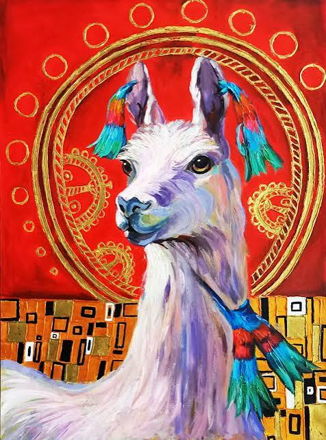
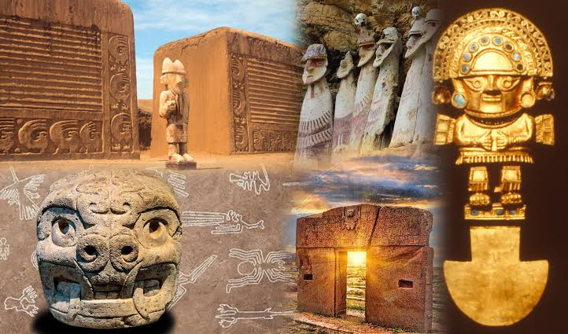
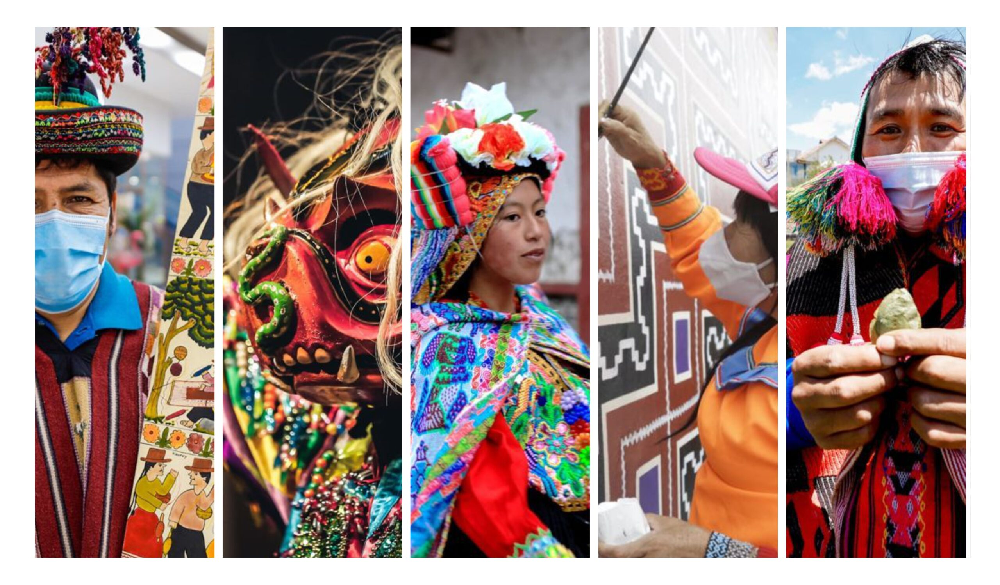

Arte
Arte y creatividad
Conoce las diferentes expresiones artísticas y culturales.
Arte, historia, patrimonio y cultura peruana.

Conoce las diferentes expresiones artísticas y culturales.

Noticias sobre nuestro patrimonio histórico y cultural.

Tradiciones, costumbres y expresiones culturales del Perú.